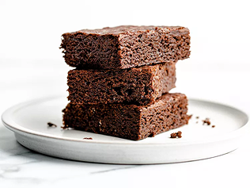

terug naar recepten

Titel recept
Korte beschrijving van het recept.
30 min
Makkelijk
Ingrediënten
- 200 g pasta
- 1 ui
- 2 teentjes knoflook
- 1 blik tomaten
- Olijfolie
- Peper en zout
Bereiding
-
Stap 1.
Kook de pasta volgens de verpakking.
-
Stap 2.
Snipper de ui en knoflook en fruit ze in olijfolie. Voeg de tomaten toe en laat 10 minuten zachtjes pruttelen. Breng op smaak met peper en zout.
-
Stap 3.
Meng de saus door de pasta en serveer.